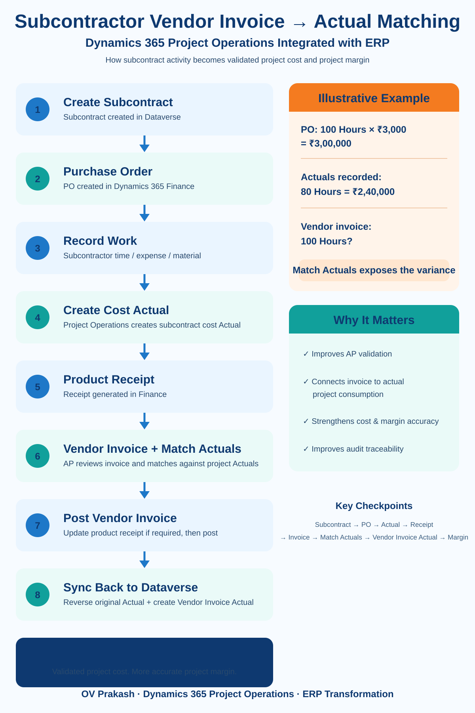

A subcontractor completes project work. Project Operations records the consumption. A Cost Actual is created. Later, the subcontractor sends an invoice.
At that point, one of the most important questions for Finance should be: does the vendor invoice actually represent the project work that was performed and recorded?
Microsoft is improving this process in Dynamics 365 Project Operations Integrated with ERP through the ability to match subcontractor vendor invoices to the Actuals behind the corresponding product receipts.
Why this matters
Traditional invoice validation focuses on the procurement chain: Purchase Order → Product Receipt → Vendor Invoice. In a project-based business, however, another question matters just as much: what project activity created the receipt?
By exposing the related Project Operations Actuals during vendor-invoice processing, the AP user can validate the invoice against the project consumption underneath the procurement documents.
1. The process starts with the subcontract
The subcontract in Project Operations represents the commercial agreement with an external vendor. Depending on the engagement, it can define the vendor, project, subcontract lines, role or category, quantity, unit price, currency, and other commercial details.
In Project Operations Integrated with ERP, the subcontract synchronizes into Dynamics 365 Finance and drives the corresponding purchase-order process.
2. The subcontractor performs the work
Subcontract quantity: 100 Hours
Subcontract rate: ₹3,000 per hour
Purchase Order value: ₹3,00,000
Actual work recorded: 80 Hours
Operational project cost: ₹2,40,000
The subcontractor's time, expense, or material activity produces project transactions that represent actual consumption against the subcontract.
3. Product receipts connect project activity to procurement
For integrated subcontracting scenarios, Dynamics 365 Finance can create product receipts corresponding to Project Operations subcontract activity. The product receipt becomes the bridge between project consumption and Accounts Payable.
4. Then the vendor invoice arrives
Assume the vendor sends an invoice for the full 100 hours even though only 80 hours are represented by the project Actuals.
Actuals: 80 hours = ₹2,40,000
Vendor invoice: 100 hours?
Without project-level visibility, the invoice may appear valid against the PO ceiling. But the project consumption tells a different story.
5. What does Match Actuals do?
Microsoft's capability adds a Match actuals action to subcontract vendor-invoice processing. The AP user can review the Actuals associated with the product receipts linked to the invoice and identify which project transactions belong to the vendor invoice being processed.
This changes the validation question from:
to
Does the invoice match the actual project activity behind the receipt?
6. Matching and unmatching Actuals
Actuals associated with the relevant receipts can be reviewed and selected for matching. Users can match or unmatch project Actuals depending on which transactions belong to the invoice.
This is important when vendor billing is partial. For example, the project might contain 80 hours of subcontractor activity, while Vendor Invoice 1 bills 50 hours and Vendor Invoice 2 bills the remaining 30 hours.
7. Updating the product receipt
After deciding which Actuals belong to the invoice, the product receipt can be updated so that the receipt quantity aligns with the selected project consumption. This strengthens the relationship among:
8. What if invoice quantity and Actual quantity do not match?
This is exactly the scenario implementation teams should test. A mismatch such as 80 hours of Actuals against a 100-hour vendor invoice should become a visible exception for review rather than disappearing inside downstream project-cost reporting.
Useful UAT scenarios include both:
- Actual = 80 hours, Invoice = 100 hours
- Actual = 100 hours, Invoice = 80 hours
9. What happens after the vendor invoice is posted?
After posting in Finance and synchronization back to Dataverse, the transaction lifecycle becomes especially important. Microsoft documents a process in which the original subcontract cost Actual can be reversed and a new Actual based on the posted vendor-invoice line is created.
The objective is to avoid leaving both the operational subcontract cost and the final vendor-invoice cost active as though they were separate costs.
10. Why this matters for project margin
Subcontractor reconciliation is not only an Accounts Payable process. It is part of project-margin validation.
If invoice quantity, rates, matched Actuals, reversals, or downstream integrations are incorrect, the project's reported cost and profitability can also be misleading.
11. The end-to-end technical flow
↓
Subcontract Line
↓
Purchase Order / PO Line
↓
Subcontractor Time, Expense or Material
↓
Project Cost Actual
↓
Product Receipt
↓
Vendor Invoice
↓
Match Actuals
↓
Validate Quantity and Amount
↓
Update Product Receipt if required
↓
Post Vendor Invoice
↓
Dataverse Synchronization
↓
Reverse Original Actual
↓
Create Vendor Invoice Actual
↓
Project Cost and Margin
12. Technical prerequisites and integration
Microsoft currently documents Dynamics 365 Finance 10.0.48 or later for the specific Match Actuals experience, together with the relevant Project Operations subcontracting configuration and feature enablement.
Because this is an Integrated with ERP process, dual-write and the Dataverse-to-Finance transaction chain remain important. Troubleshooting should therefore consider the complete path rather than only the AP screen.
Microsoft Learn — Subcontract purchase orders and vendor invoices
13. A better UAT scenario
A basic test such as Create PO → Create Receipt → Post Invoice only proves that Accounts Payable can process the invoice. A stronger Project Operations test should trace one subcontractor transaction end-to-end.
- Project Operations: verify the subcontract, line, project, task, role and quantity.
- Actual: verify the expected subcontract Cost Actual.
- Finance: verify the purchase order, PO line and product receipt.
- Vendor Invoice: create an invoice for the intended quantity.
- Match Actuals: confirm the correct Actuals appear and can be matched/unmatched.
- Posting: post the vendor invoice.
- Dataverse: verify the original Actual reversal and Vendor Invoice Cost Actual.
- Margin: confirm the resulting project cost and profitability.
14. Common issues to investigate
If an Actual is not available for matching, investigate the subcontract line, product receipt relationship, project-transaction status, corrections, and integration state. If the quantity does not match, compare Actual Quantity, Product Receipt Quantity, and Vendor Invoice Quantity.
If the invoice posts but the project cost still looks wrong, trace the lifecycle rather than stopping at the invoice:
15. What this changes for AP, Project Managers, and Project Accountants
Accounts Payable gets better visibility into the project consumption behind the procurement documents. Project Managers gain stronger confidence that subcontractor invoices represent work actually consumed by their projects. Project Accountants get a clearer reconciliation path across operational cost, procurement, vendor liability, and project profitability.
My implementation takeaway
Test one subcontractor transaction all the way from commercial agreement to project margin:
If the team can trace every stage, subcontractor cost control becomes much stronger. If not, a successfully posted vendor invoice can still hide a project-cost problem.
Final thought
The value of this capability is not simply another Match Actuals button. It is the ability to connect what the subcontractor agreed to deliver, what the project actually consumed, what the vendor eventually invoiced, and what ultimately appears in project cost and margin.